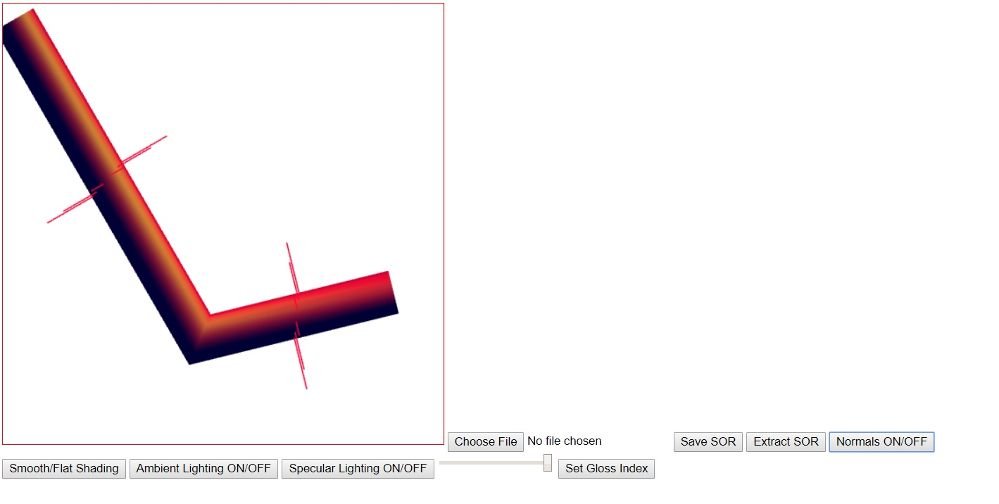

Name: Stephen Woodbury
Student ID: 1429496 : swoodbur
Submission For: Prog2
Date: 10/27/2017
Files Included: WoodburyStephenLab2Features.html, WoodburyStephenLab2Driver.html, WoodburyStephenLab2Driver.js, WoodburyStephenProg2OutputAmbOnDiffOnSpecOffFlat.jpg, WoodburyStephenProg2OutputAmbOnDiffOnSpecOffSmooth.jpg, WoodburyStephenProg2Outputn1AmbOnSpecOnSmooth.jpg, WoodburyStephenProg2Outputn20AmbOnDiffOnSpecOnFlat.jpg, WoodburyStephenProg2Outputn20AmbOnDiffOnSpecOnSmoothNoNorms.jpg, WoodburyStephenProg2Outputn20AmbOnSpecOnSmooth.jpg
Assignment Details: Take Lab2; Add Smooth Shading, Specular Lighting, and Ambient Lighting functionality as well as to create an easy to use GUI for the user
Additional Features: Lighting calculations for color done in the fragment shader. Option to toggle Ambient lighting on or off
Notes: The code is messy and verbose due to my accounting for multiple potential problems, most of which will never come to be. I need to clean it up However, the program is fully functional and performs as specified.
WoodburyStephenProg2OutputAmbOnDiffOnSpecOffFlat.jpg: Ambient+Diffuse Light; Flat Shading
WoodburyStephenProg2Outputn20AmbOnDiffOnSpecOnFlat.jpg: Ambient+Diffuse+Specular Light; n=20; Flat Shading
WoodburyStephenProg2OutputAmbOnDiffOnSpecOffSmooth.jpg : Ambient+Diffuse Light; Smooth Shading
WoodburyStephenProg2Outputn1AmbOnSpecOnSmooth.jpg: Ambient+Diffuse+Specular Light; n=1; Smooth Shading
WoodburyStephenProg2Outputn20AmbOnSpecOnSmooth.jpg : Ambient+Diffuse+Specular Light; n=20; Smooth Shading

WoodburyStephenProg2Outputn20AmbOnDiffOnSpecOnSmoothNoNorms.jpg : Ambient+Diffuse+Specular Light; n=20; Smooth Shading; No Normals
Link to Driver : WoodburyStephenProg2Driver.html